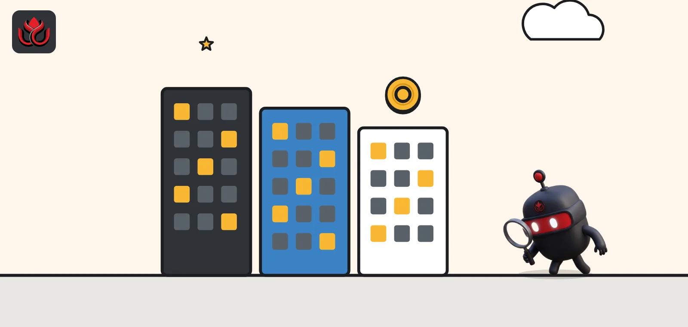
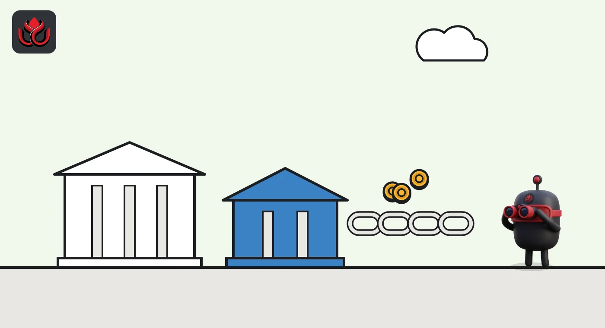

BlackRock's BUIDL slips to No. 3 as tokenized Treasuries shrink to $14.2 billion
BlackRock's on-chain fund held $2.08 billion on November 1, down 7.61% in a month, and now ranks behind Ondo's USDY and Circle's USYC. The whole tokenized Treasury market shrank 3.68%, but holder numbers keep rising.

Key points
- Tokenized US Treasuries totaled $14.21 billion on November 1, 2026, down 3.68% in a month across 119 products, per rwa.xyz.
- Ondo's USDY ($2.40 billion) and Circle's USYC ($2.24 billion) now beat BlackRock's BUIDL ($2.08 billion), which has just 101 holders.
- Balances fell but holders rose: 85,677 for tokenized Treasuries and 5.48 million across all tokenized real-world assets.
BUIDL drops to third
The market for tokenized US Treasuries, blockchain tokens backed by short-term US government debt, shrank in October. On November 1, 2026, the rwa.xyz dashboard counted $14.21 billion across 119 products, down 3.68% from 30 days earlier. The average 7-day yield stood at 3.73%.
The biggest change came at the top. BlackRock's USD Institutional Digital Liquidity Fund, known as BUIDL, held $2.08 billion, down 7.61% in 30 days. That put it third, behind Ondo's USDY at $2.40 billion and Circle's USYC at $2.24 billion.
BUIDL is managed by BlackRock and issued through the Securitize platform, which also acts as transfer agent, rwa.xyz shows. It is built for large investors: the minimum subscription is $5 million and it is open only to US qualified purchasers. Its management fee ranges from 0.20% to 0.50%.
The top six
Here are the six largest tokenized Treasury products on November 1. Franklin Templeton runs two versions of its Benji fund: BENJI and iBENJI, an institutional fund with just 51 holders. Taken together they hold about $2.55 billion, more than any single product.
Largest tokenized Treasury products, November 1, 2026
US$ billion
Source: rwa.xyz, Tokenized U.S. Treasury Funds, data as of November 1, 2026
Few holders, big tickets
The top products serve very different customers. USDY has 18,004 holders, up 5.57% in a month, and pays a 7-day yield of 3.68%. BUIDL has just 101 holders, down 1.94%, with a 7-day yield of 3.75%. USYC has only 28 holders, down 6.67%, and yields 3.43%.
USDY, whose largest token supplies sit on Ethereum, Stellar, Sei, Solana and BNB Chain, grew 5.05% over the month while the two funds with the fewest holders, BUIDL and USYC, both shrank.
The products are also built differently. USDY is a tokenized note for investors outside the United States, backed by short-term Treasuries and bank deposits. It has a $100,000 minimum for subscriptions and redemptions, and its price rises over time as yield builds up: each token was worth about $1.15 on November 1, rwa.xyz shows. BUIDL, by contrast, keeps a net asset value of $1.00 per token.
Activity differs too. USDY recorded about 260,000 transfers worth roughly $265 million over the past month, from about 5,000 active addresses. BUIDL saw just 183 transfers worth about $445 million, from 33 active addresses, according to rwa.xyz. Fewer, larger tickets is what an institutional fund looks like on-chain.
BUIDL itself is spread across many chains. On rwa.xyz, Solana holds the largest share, followed by Avalanche and Ethereum.
Where BUIDL sits, by network (November 1, 2026)
US$ million
BUIDL tokens are priced at $1.00. Source: rwa.xyz BUIDL
The rest of the top ten
Below the big five, the list shows how many traditional asset managers now run on-chain funds. JPMorgan's OnChain Liquidity-Token money market fund (JLTXX), issued through Kinexys Digital Assets, held $792 million. WisdomTree's Treasury money market digital fund (WTGXX) had $668 million. China Asset Management's USD digital money market fund (CUMIU), offered through the Libeara platform, held $555 million.
Invesco's short-duration government fund (USTB), on the Superstate platform, held $437 million, and an Ondo-tokenized version of the iShares 0 to 1 Year Treasury Bond ETF (SHVon) had $321 million.
Market shares have shifted with the ranking. On rwa.xyz numbers, USDY now holds about 16.9% of the tokenized Treasury market and BUIDL about 14.6%.

The wider tokenized asset market is flat
Treasuries are the largest slice of tokenized real-world assets (RWAs), but not the whole picture. Across all categories tracked by rwa.xyz, distributed asset value was $39.03 billion on November 1, up just 0.18% in 30 days. The number of holders grew much faster, up 7.72% to 5,477,762.
In commodities, the gold tokens XAUT and PAXG stood at $2.97 billion and $1.72 billion. Stablecoins, tracked separately, totaled $286.24 billion, down 2.90% over the month.
Tokenized stocks were the fastest-growing major category. The rwa.xyz stocks page showed $3.58 billion of distributed value on November 1, up 9.87% in 30 days, held by 4.57 million holders across 6,671 assets. Monthly transfer volume in tokenized stocks, however, fell 88% to $10.21 billion, a reminder that holding and trading are different things.
Timeline
Tokenized Treasuries total $14.21 billion across 119 products, down 3.68% in 30 days
rwa.xyz shows USDY at $2.40 billion, USYC at $2.24 billion and BUIDL at $2.08 billion; market at $14.21 billion
Tokenized stocks reach $3.58 billion, up 9.87% in 30 days
LC Insight analysis
This section is our reading of the facts above, not a statement of fact.
- We think BUIDL's slide is about a few big holders, not BlackRock's standing. With 101 holders, one or two firms moving cash elsewhere is enough to reshuffle the ranking.
- Money is rotating, not leaving. USDY grew 5% while the two funds with the fewest holders shrank. A product that thousands of wallets can hold on many chains grows more steadily than one built for a few institutions.
- The next winners will be the funds accepted as collateral at exchanges, prime brokers and banks. Those balances stay put instead of leaving with the next rate change.
What's next
- Whether BUIDL regains first place in November
- Franklin Templeton's combined Benji balances
- Yields on tokenized Treasuries as US rates change
- New launches from banks and asset managers entering the top ten
Disclaimer. This article is based on public information and the sources listed below as of the update time shown. It is for information only and is not investment, legal or tax advice. Figures may change as companies and authorities publish new data.
Sources
- rwa.xyz, Tokenized U.S. Treasury Funds (data as of November 1, 2026)
- rwa.xyz, BUIDL asset page (November 1, 2026)
- rwa.xyz, USDY asset page (November 1, 2026)
- rwa.xyz, USYC asset page (November 1, 2026)
- rwa.xyz, iBENJI asset page (November 1, 2026)
- rwa.xyz, RWA market overview (November 1, 2026)
- rwa.xyz, Tokenized Stocks (November 1, 2026)